School portal · Design review
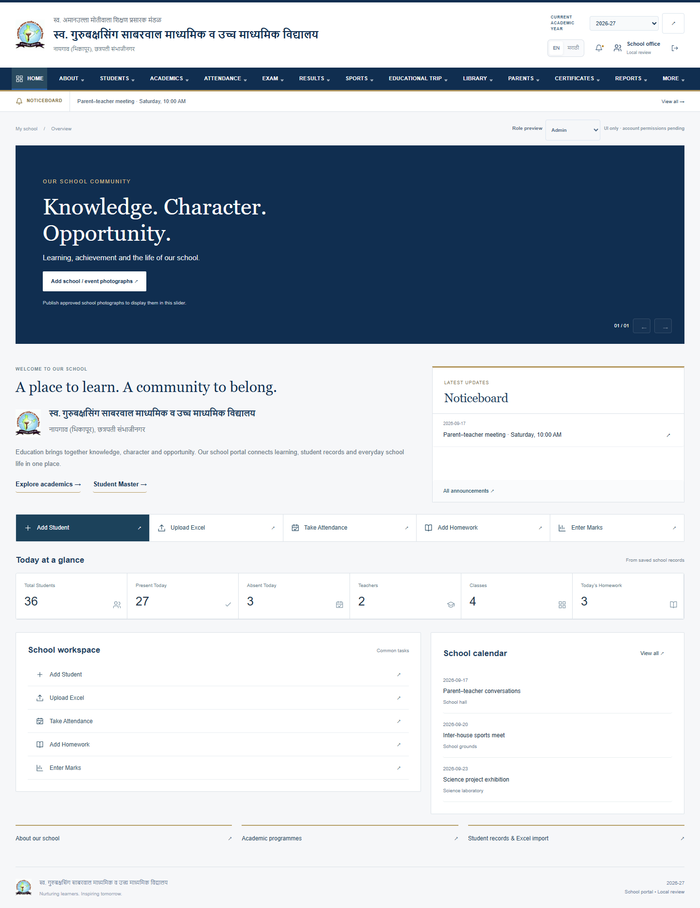
01 · Desktop Home
Header, navigation, notice strip, slider area and quick actions
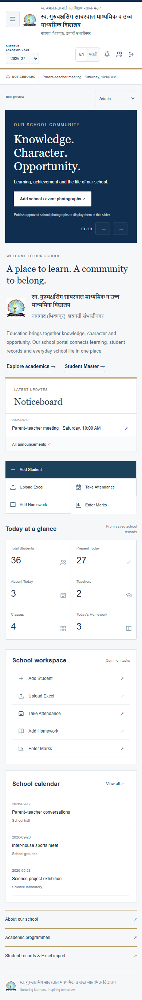
02 · Mobile Home
390 px phone layout
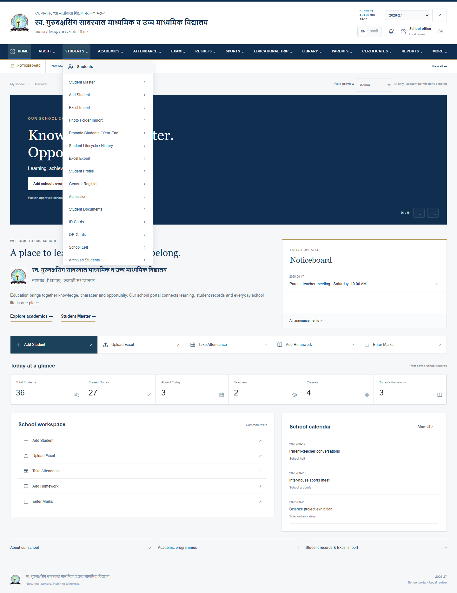
03 · Desktop Dropdown
Student Master and Add Student first
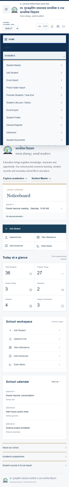
04 · Mobile Menu
Hamburger and accordion navigation
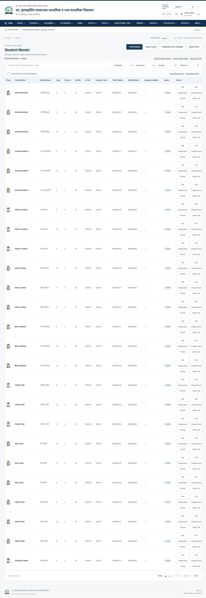
05 · Student Master
Search, filters, sorting, pagination and row actions
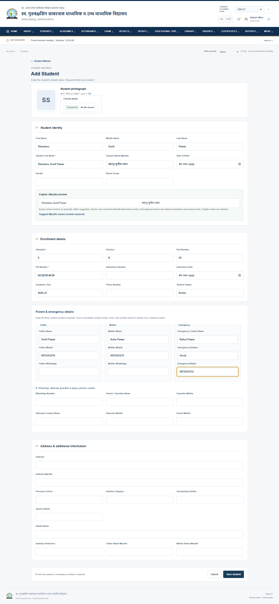
06 · Add Student
Identity, enrollment, contacts and additional details
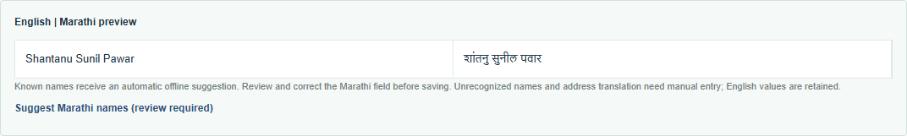
07 · Marathi Preview
Known-name suggestion with manual review
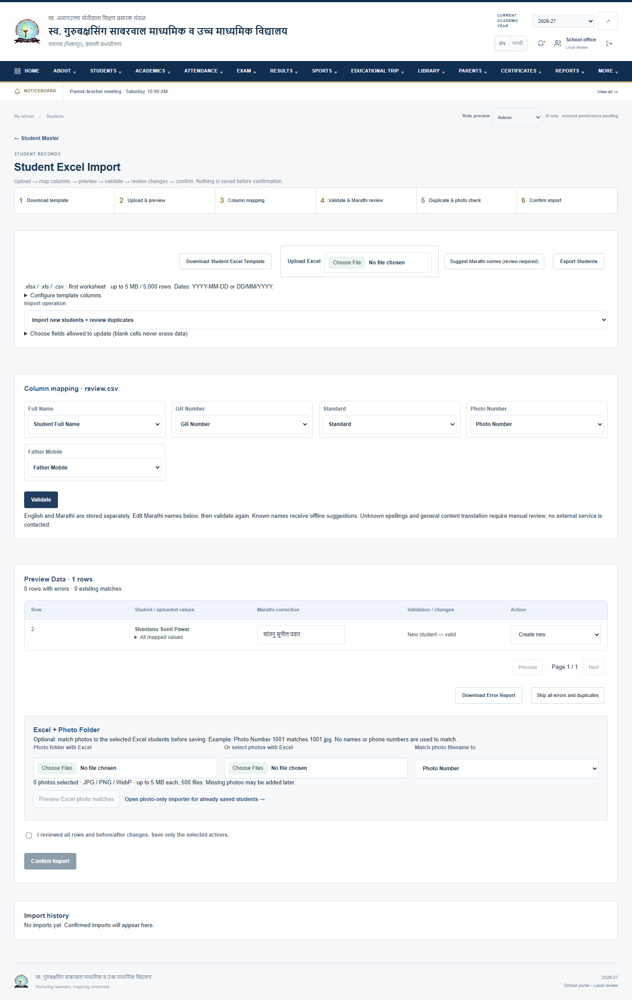
08 · Excel Import
Map, preview, validate, correct and confirm
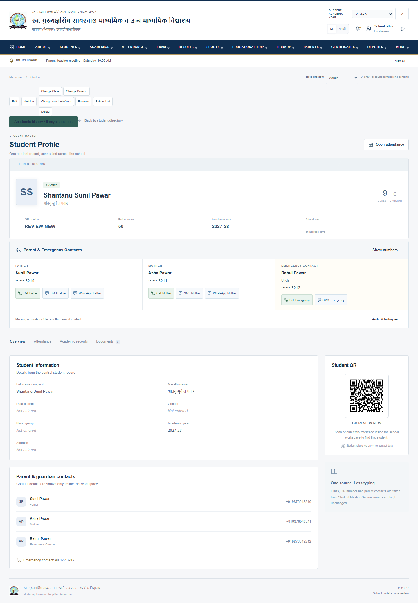
09 · Student Profile
Student identity and separate family contacts
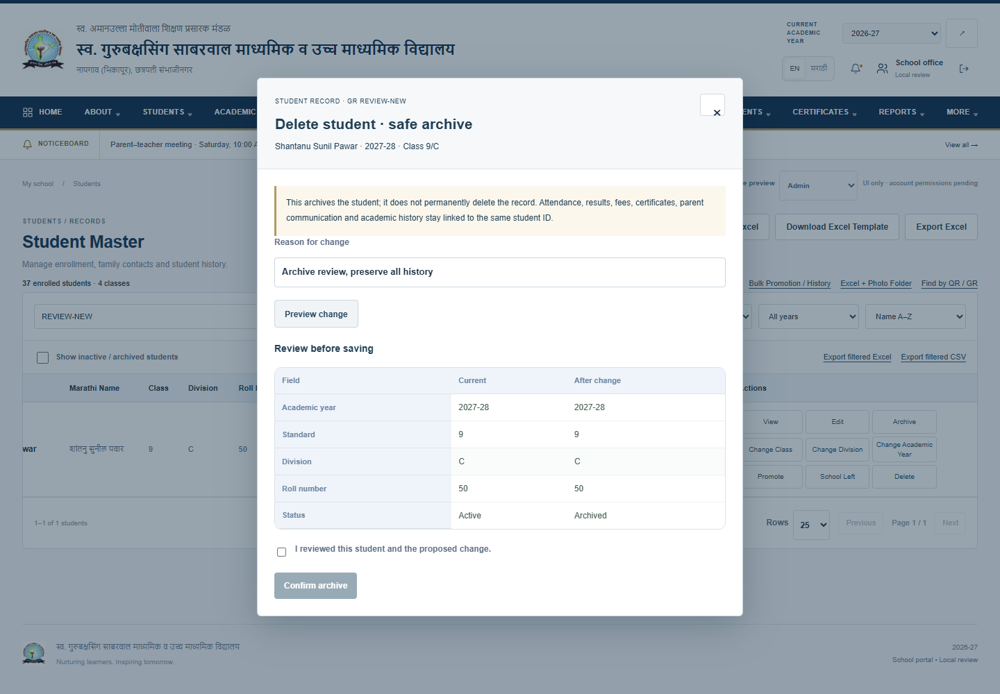
10 · Delete / Archive
Review and confirm; retain linked history
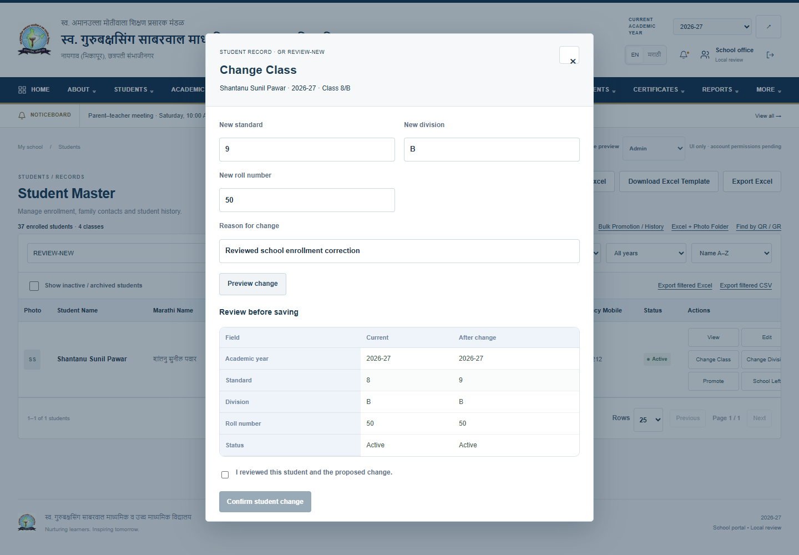
11 · Class Change
Previous and proposed enrollment values
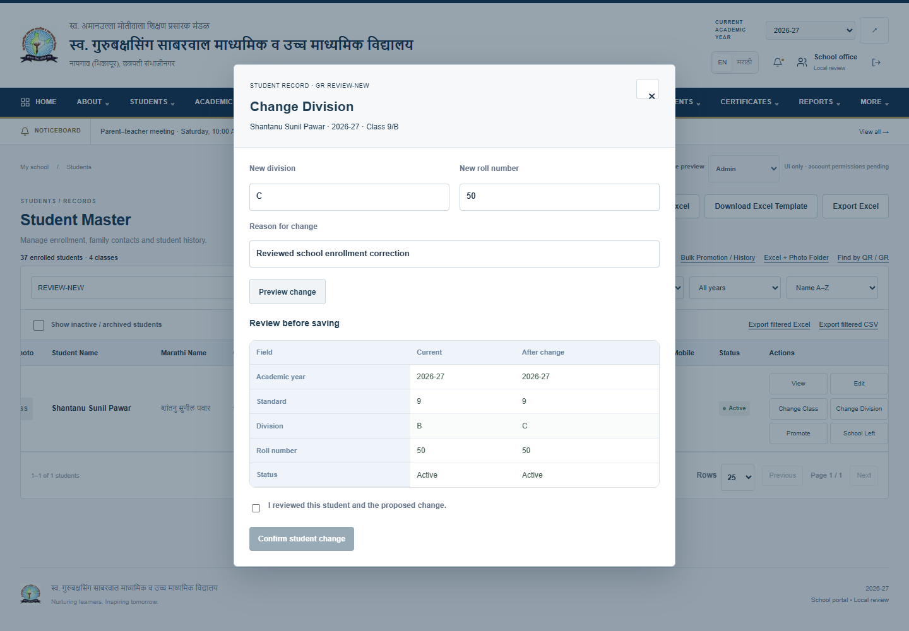
12 · Division Change
Change division and roll with history
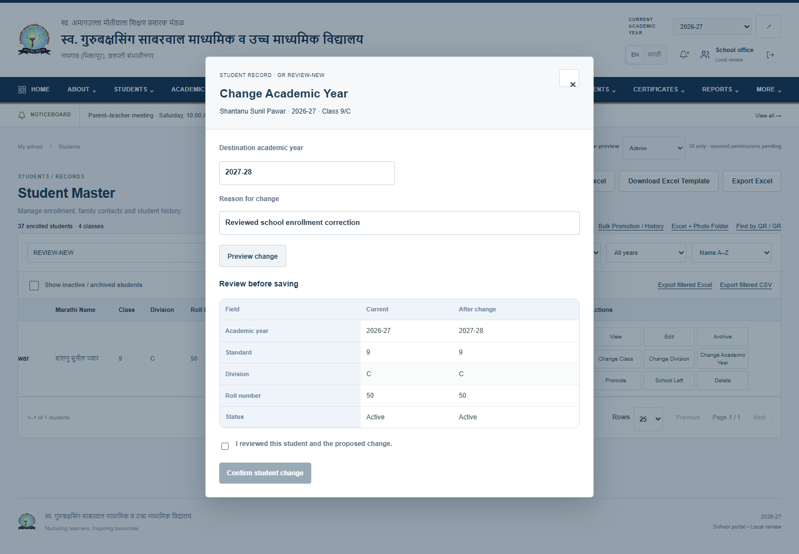
13 · Academic Year Change
Keep the same student ID and earlier academic evidence
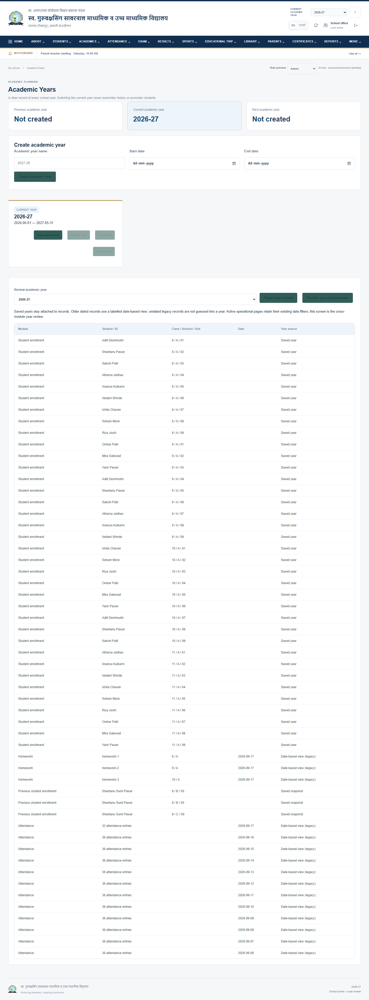
14 · Academic Year Selector
Current-year selection and year management
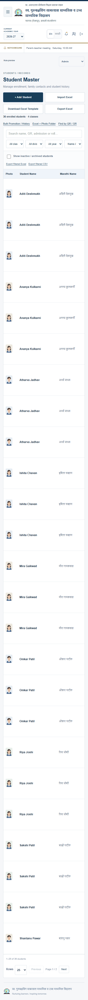
15 · Mobile Student Master
Responsive controls and horizontally scrollable records